r/DSC180 •Made by: u/Pravar_Bhandari, u/Scott_Sutherland, u/Felicia_Chan, u/Ryan_Don I want to create a Subreddit Recommendation System As the title says, I want to create a Reddit Community Recommendation System. I know that this obviously already exists, but I want
to try recommending subreddits to users by using user interactions as embeddings in my recommender system. Furthermore, I want this to be a graph-based
recommender system. How would I go about creating something like this?
Suggested: r/TigerGraph
Introduction
Social media has become the most important way for people to access information, connect with friends, and expand businesses.
Around 70 percent of all Americans use social media to connect with each other and share information.
The social media platform Reddit is a massive collection of forums where people can share news and content.
Reddit is made up of more than a million communities known as subreddits; each subreddit consists of a different topic.
Users in these subreddits can make posts and comments to interact with other users, essentially forming communities with specific interests.
As of 2022, Reddit has 50 million daily active Reddit users worldwide. Reddit users are often recommended subreddits based
on those they have visited or interacted with. Like many other social media platforms, Reddit's
comment representation is a tree structure where separate replies to a comment are branches. We can think of conversation in one of these trees
as a comment chain, that is, a set of comments where each one (apart from the first comment) is a reply to one preceding it.
We will investigate the typical size, shape and diversity of users in each of these chains.
From a business point of view, the impact of this task would be in user acquisition and user retention. For current users, this would
help expose them to subreddits they may be interested in, decreasing the likelihood of churn. For newer users without a few established
subreddit communities they are a part of, immediately exposing them to similar communities may be beneficial in making them recurring
users rather than one-time users. From a graph perspective, this problem is worth investigating as it can evaluate the relevancy of user
interactions in a graph-like comment interaction structure as a basis for recommendation systems. We use a graph-based machine learning
algorithm that assists in recommending subreddits to users based upon their interactions with other users in subreddits through comment chains.
Previous work has been done in the space of subreddit recommendation. In one attempt, a subreddit-to-subreddit interest network was built, where two
subreddits are connected if a large portion of one subreddit's members are also active in the other. The model they use is K-means clustering, with
another choosing to use the K-Nearest Neighbors algorithm. These examples along with others are not necessarily graph-based. Where graph community
detection tasks of subreddits are used, the graphs are represented in relatively simple ways, primarily incorporating user and subreddit subscription
relationships and using that data to make recommendations using "non-graphy" criteria such as similarity scores like Jaccard. By contrast, we look to
use additional information which can be represented as graphs such as interactions between different users within subreddits in an attempt to leverage
that interaction information as an indicator of user’s affinity for different communities/subreddits. We aim to use collaborative filtering encoded
within our algorithm with user interactions to then accurately recommend subreddits to users.
In order to create an algorithm ourselves, we use a dataset provided and maintained by Jason Baumgartner which can be downloaded via their website
pushshift.io at its data directory subdomain. There, data for Reddit
users, subreddits, posts and comments among other things are hosted in monthly time increments going back to Reddit's inception in 2005. In order to ensure
we didn't face any hardware limitations, we opted to use all comments prior to 2011 (2005 - Dec. 2010). However, because the data across all time periods
is formatted in the same way, our work could easily be scaled up simply by downloading and using the more recent files. From it, we build a graph with 2
different types of nodes and 2 types of edges. Our 2 nodes are: User nodes and Subreddit nodes. Our first edge, interacted_with, connects
users who interacted with other users. Second, the commented_in edge connects users to subreddits that they have interacted in via comments.
Dataset Name
Contents
Users-Users
Connects users who interacted with one another
Subreddits
All Subreddits in the dataset and their keyword embeddings
Users
All users in the dataset and their keyword embeddings
Users-Subreddits
Connects users to subreddits they have commented in.
All of the edges in this dataset are undirected, meaning that the relationship between any edge (vi, vj)
in the graph is mutual. In total, our graph contains ~172,000 total vertices and ~1,200,000 edges. In a bit more detail, the graph contains 2,929
unique subreddit vertices, and ~170,000 user vertices along with ~865,000 "interacted_with" edges and ~345,000 "commented_in" edges.
In particular, this dataset allows us to make this evaluation on a network like the one that can be derived from Reddit. That is, one which encodes
information about the interaction of users with other users within pre-defined communities. However, as many social media platforms use very similar
representations for the links between users, this data can hopefully allow us to make more broad claims about social graphs and their usefulness in making
predictions about users preferred communities.
1
Why Graph?
We decide to explore graph-based representations of data for good reason. Graph theory has existed for decades, but advancements in computing power
and introduction of large-scale graph databases like TigerGraph have allowed applications of graph algorithms to a wide range of domains. Traditional
data methods, like representing data tabularly, are less effective in representing complex relationships; rows are observations, columns are variables.
This can be limiting for data that has many associated variables and complex relationships, as tabular data is less effective. We believe that
user-subreddit and user-user relationships would be better represented as graphs, which makes representation more flexible. Especially for Reddit,
like many other social media platforms, their comment representation is a tree structure where separate replies to a comment are branches, which is well
represented by graphs.
2
Data Preparation
In order to fully leverage the graph structure of our data, we use TigerGraph,
a graph analytics platform which provides a myriad of tools and resources for graph-based data science
and machine learning, making it a valuable solution for us. The data we downloaded from pushshift,
each comment is given in the same format as the following example:
There is a lot of interesting data here, but we are most interested in the user who made the comment, the subreddit it was posted to and the
parent comment if any. Due to the fact that any comment on Reddit is either a child of a post of another comment, we can use this parent
relationship to generate the comment chain graph structure we will set up in TigerGraph. We then use the author field to create edges between
user vertices identified by those author names and the comment id's as well as subreddit to comment edges using the subreddit name as an identifier
for the subreddit vertices. Once we have the correct files specifying those vertices and edges, we simply use TigerGraph's tools for uploading and
mapping the data to generate our graph.
After loading our data to TigerGraph, we develop a schema that looks like so:
This schema consists of two vertex types (Subreddit, User) and 2 edge types (interacted_with, commented_in)
3
Exploratory Data Analysis
Once we prepare and load our data, we do some exploratory data analysis to better understand the data we are working with. First, we look into some more
general statistics like the top 10 largest subreddits with the most unique users: Fig 1 - Top 10 subreddits with Unique Users
Looking at Figure 1, subreddits that seem more broad and common like 'gaming' and 'pics' are in the top 10 subreddits.
Since they are broad, it is more likely that users will join these and be interested in these subreddits. In Figure 2,
we look into the distribution of the number of comments made by users: Fig 2 - Distribution of number of comments made by users
We see that 27% of users have made 1 comment, 41% of users have made between 2 and 10 comments, and 31% of users have made more than 10 comments.
Next, we look into the karma of users. On Reddit, karma is a score of a user/comment that is determined by the sum of all upvotes minus the sum of
all downvotes. It is usually displayed publically next to the upvote and downvote buttons. First we look into the average karma for a comment by
subreddit:
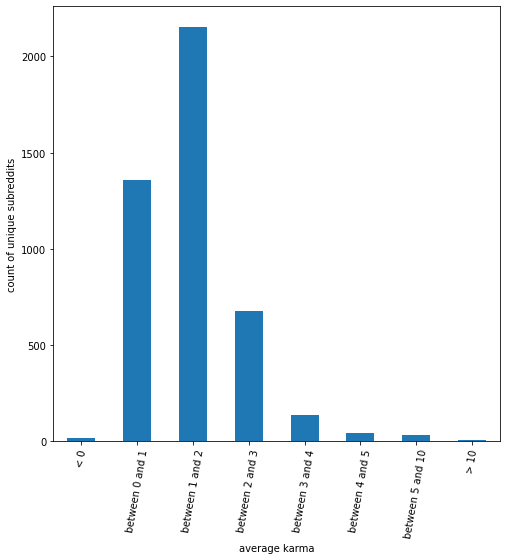
Fig 3 - Average Karma for a Comment by Subreddit
In Figure 3, we can see that most of these subreddits have an average karma for comments in the subreddit between 0 and 3.
Next, we look into the average karma for a comment by user:
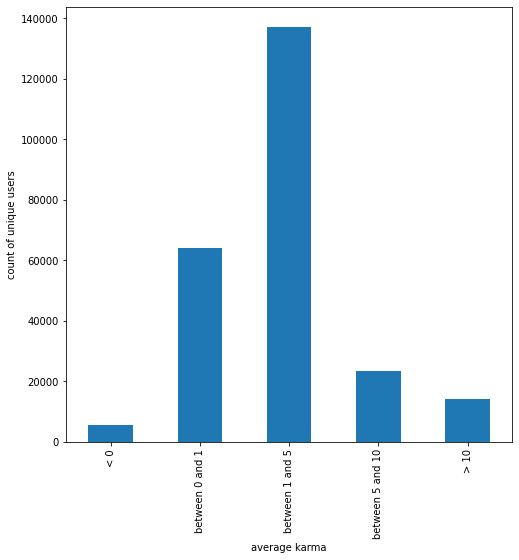
Fig 4 - Average Karma for a Comment by User
In Figure 4, we see that once again, a large majority of users have an average karma between 0 and 5 for their comments.
Finally, we also analyze the distribution of users by karma:
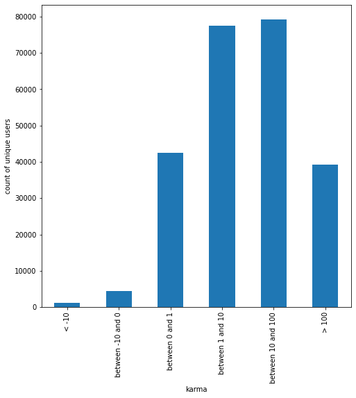
Fig 5 - Distribution of Users by Karma
Figure 5 shows that a majority of users have between 1 and 100 karma associated with their accounts, while few users have negative karma.
After this, we aim to look at the volume of comments by day. From our dataset, we find that the majority of comments are made in the month of December.
Looking at Figure 6:
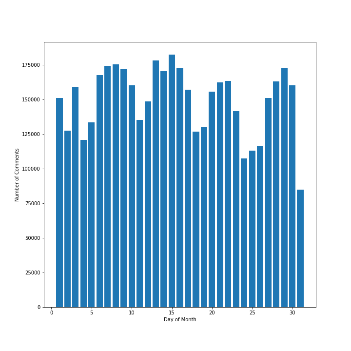
Fig 6 - Volume of Comments by Day (December)
This doesn't give us much insight into large trends, but we do see that for the most part, there are several days where the volume of comments seems
to be relatively similar to one another, meaning that there does not seem to be a special relationship between day of month and number of comments.
Finally, we delve a bit deeper into comment chains, as that is where the biggest focus of our model is. We find that we have 942,558 comment
chains in our data. Figure 7 shows the distribution of comment chain lengths.
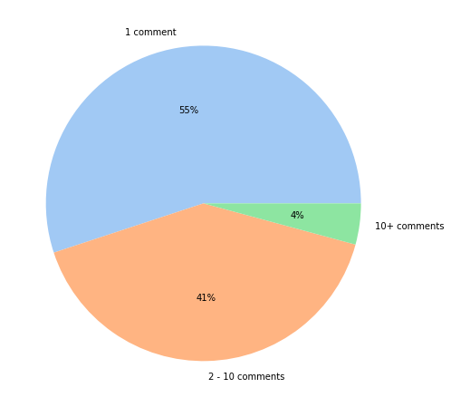
Fig 7 - Distribution of Comment Chain Lengths
From Figure 7, we can see that the majority of comments do not actually belong to a comment chain. This means that the comment was posted and no-one
replied. These data are likely not very useful in generating meaningful metrics for recommendation based on user comment interactions.
However, 45% of the comment data are part of chains with 41% being 'small' chains of only 2 - 10 comments and the other 4% being long chains with over 10
comments. We can examine the distributions of both of these groups:
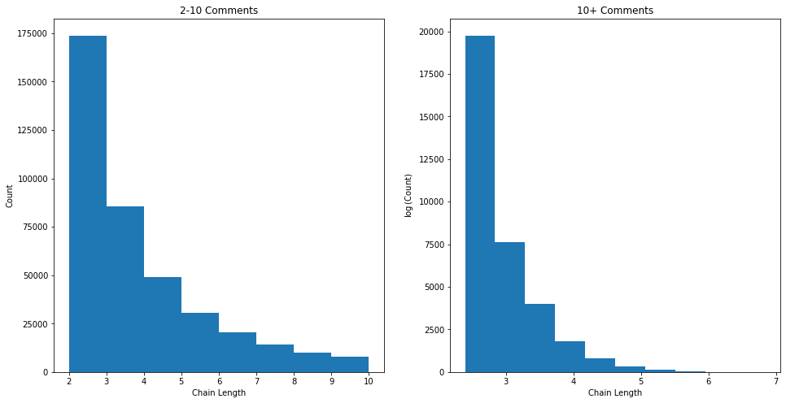
Fig 8 - Distribution of Comment Chain Lengths (2-10 and 10+)
As we might expect, we generally have less chains of longer lengths. In short, there are mostly smaller chains in the data but the distribution is
heavily right-skewed due to some very long chains.
Now we look at some data such as the number of users in each chain and the number of times users tend to interact in a chain.
Figure 9 details the number of unique users per chain:
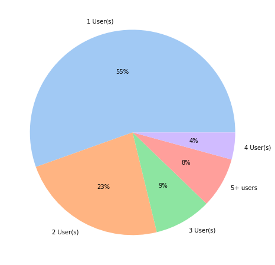
Fig 9 - Distribution of Unique Users in Chains
Next, we look at the ratio between the number of unique users in a chain and the total number of comments in that chain. This tells us
how unique the set of users participating in a chain is. Smaller ratios means there is less diversity. We find that the chains are generally
quite diverse as, on average, the number of unique users is very close to the total number of comments. However, because we are including
chains of length one which the ration is guaranteed to be 1.0 for, this value is quite skewed. We remove those and try again:
Minimum Number in Chain
count
mean
std
min
1
428186.0
0.864
0.202
0.016
2
203798.0
0.829
0.202
0.016
3
117313.0
0.811
0.197
0.016
4
76377.0
0.800
0.191
0.016
5
54273.0
0.793
0.186
0.016
6
40719.0
0.788
0.181
0.074
7
32033.0
0.784
0.176
0.085
8
25871.0
0.781
0.173
0.085
9
21444.0
0.779
0.17
0.085
10
18123.0
0.777
0.166
0.085
This is more indicative of the data we wanted to see. Now, as we move towards larger and larger chains, the average ratio of unique users
seems to plataeu at ~0.78 as indicated by Figure 10.
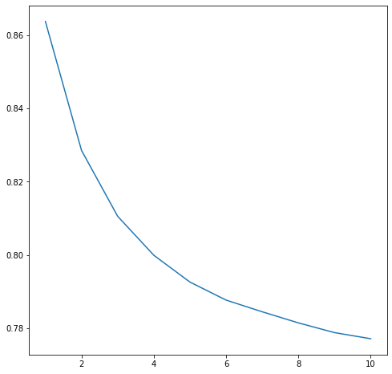
Fig 10 - Average Ratio of Unique Users in Chains
4
Baselines
After completing our EDA, we aim to develop baseline models for community detection so as to compare these to our final model.
We develop baseline models: K-Nearest Neighbors, a recommender system using Jaccard similarity, and a simple popularity prediction model.
These baselines are not necessarily graph-based, but they help us to set and measure the baseline to then build upon for our final model.
5
Non-Graph Algorithms
Our non-graph baselines consist of the following three algorithms:
The K-Nearest Neighbors algorithm we develop uses cosine similarity as the metric, and chooses 20 neighbors. Cosine similarity is a measure
of similarity between two data points in a plane, and in a KNN is used to determine the distance between two points. This can be found
mathematically as follows:
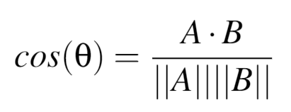
where A and B are two vectors of attributes.
The recommender system we develop uses Jaccard similarity to recommend subreddits to users. The Jaccard index is used to gauge the similarity
and diversity of sets, and can be determined mathematically as follows:
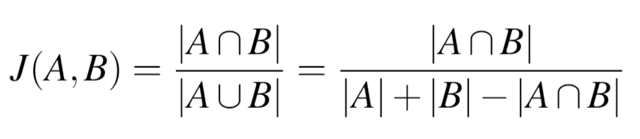
A final baseline we tried was a simple popularity predictor model, which recommends users the most popular subreddits that they are not already
subscribed to.
5.1
Centrality Algorithms
We then build simple algorithms in TigerGraph to calculate several different centrality-based metrics based on our graph network:
Closeness for Users: a measure of the average farness (inverse distance) to all other user nodes.
Nodes with a high closeness score have the shortest distance to all other nodes. The closeness of a node x is determined by:
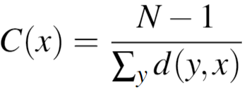
where N is the number of nodes in the graph, and d(y,x) is the length of the shortest path between user vertices x
and y.
Betweenness for Users: This is a measure of the percentage of shortest paths to other users that must go through a specific user node.
A user node with high betweenness is likely to be aware of what is going on in multiple circles. The equation for betweenness of a given
node u is:
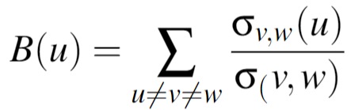
where σv,w is the total number of shortest paths from node v to node w, and σv,w(u) is the total number of shortest
paths from node v to node w that pass through u.
Eigenvector for Users: eigenvector centrality is a measure of the influence of a node in a network. A high score means that a node is connected
to many nodes who have high scores. For a given graph G := (V, E)$ with |V| vertices, where A = av,t is the adjacency matrix
(i.e. av,t = 1 if the vertex v is linked to vertex t and 0 otherwise.). We can find the eigenvector centrality using:
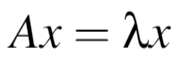
Degree Centrality for Users: The number of edges a user node has. The higher the degree, the more central this user is.
Degree Centrality for Comments: The number of edges a comment node has. The higher the degree, the more central this comment is.
PageRank for Comments: PageRank counts the number and quality of links to a comment to determine how important that comment is, assuming
that that comment is more likely to receive more connections to other comments.
PageRank for Users: PageRank counts the number and quality of links to a comment to determine how important that comment is, assuming that
that comment is more likely to receive more connections to other comments.
5.2
Community Detection Algorithms
We then use TigerGraph to build the Louvain algorithm and the Label propagation algorithm, which are two community detection algorithms:
Louvain Algorithm: Louvain is a greedy community detection algorithm that focuses on optimizing modularity, which measures the relative
density of edges inside communities with respect to edges outside communities. By optimizing modularity, Louvain results in the best
possible grouping of nodes of a given network. In Louvain, small communities are first found by optimizing modularity locally on all nodes,
then each small community is grouped into one node and the first step is repeated. The value modularity, Q is defined as:
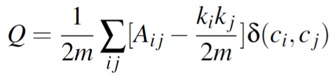
where Aij represents the edge weight between nodes i and j,
ki and kj are the sum of the weights of the
edges attached to the nodes i and j, respectively.
m is the sum of all the edge weights in the graph, ci
and cj are the
communities of the nodes, and δ is the Kronecker delta function ( δ(x,y) = 1 if x = y,
0 otherwise)
Label Propagation Algorithm: The Label Propagation Algorithm (LPA) is a fast algorithm for finding communities in a graph. The LPA works by
propagating labels throughout the network and forming communities based on this process. The intuition behind this algorithm is that a single
label can quickly become dominant in a densely connected group of nodes, but will have trouble crossing a sparsely connected region.
Labels will get trapped inside a densely connected group of nodes, and those nodes that end up with the same label when the algorithms
finish can be considered part of the same community. LPA works as follows:
Every node is initialized with a unique community label, an identifier.
These labels propagate through the network.
At every iteration of propagation, each node updates its label to the one that the maximum number of its neighbors belongs to.
Ties are broken arbitrarily but deterministically.
LPA reaches convergence when each node has the majority label of its neighbors.
LPA stops if either convergence, or the user-defined maximum number of iterations is achieved.
5.3
Final Model
Our final model is a Network Statistics Model. An embedding is created for every user in the graph which consists of a combination of graph based
features and standard machine learning features. For the graph based features, the network statistics model calculates a PageRank, Degree, Louvain,
and Label Propagation score for each user node. These four scores represents how influential a user is, how active a user is based on number of
interactions, what community a user belongs to based on Louvain, and what community a user belongs to based on LPA respectively.
To build the standard machine learning features, we first create a corpus of text for every user using all of the comments that
user has posted. We then find the top 25 most influential words from that corpus by applying TFIDF and picking the top 25 highest scoring words.
Then we use a pre-trained word2vec model which converts each of the 25 keywords into an embedding of length 50. This then gives each user an embedding
of size 25 X 50, representing the keywords that the user is interested in. Combining the graph based features with the standard features results in
each user having an embedding of size 1254. Using this size 1254 embedding, K-Nearest Neighbors is utilized to calculate the two most similar users
to the input user. We then create a pool of possible subreddits to recommend. This pool consists of subreddits that the two neighboring users are
active in that the input user isn't already interacting in. In order to determine what subreddits to recommend from this pool, we use a similar
approach to our standard machine learning feature pipeline. For every subreddit node, we create a corpus which consists of text extracted from
25 randomly picked comments made in that subreddit. We follow the same process as above by picking 25 keywords for each subreddit
using TFIDF scores. Same as above, we apply a pre-trained word2vec model to the keywords to create 25 X 50 size embeddings for each subreddit.
We then train another K-Nearest Neighbors model on the pool of possible subreddits that we created earlier. From there, we iterate through
the subreddits the user has already interacted in and use K-Nearest Neighbors to find the five most similar subreddits from the pool.
These similar subreddits will be the recommendations that we output to the user. If the number of recommendations is greater than the total number
of unique subreddits in the possible recommendation pool, the network statistics model uses the Popular Recommender to fill in those missing
recommendations.
6
Results & Evaluation
The following visual is an example of our model in motion:
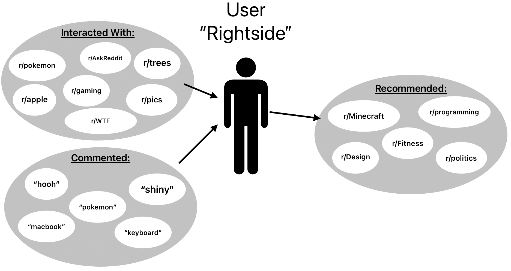
A visual example of our Network Statistics Model Results
A user "Rightside" has interacted with certain subreddits as shown in the "Interacted With" bubble. When we train our model, we get
certain keywords that are represented by the words in the "Commented" bubble. Finally, the "Recommended" bubble shows the recommendations
that our model outputs. Subjectively, this result looks great!
However, we find that we run into a very common problem that many people face when trying to evaluate unsupervised recommender system models:
how can we successfully evaluate our recommender system if there are no truth labels to compare to?
After researching several different methods, we decide to use Precision@k as our evaluation metric. Precision@k is the proportion of the recommended items
in the top-k set of recommendations that are relevant.
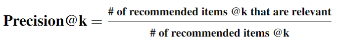
We calculate these values by pulling data from 1 year in the future from the training data and examining all the Subreddits the training users
interact in that they did not interact in before. Precision quantifies how well the recommendations we make match those true interactions. Our results
are below:
Algorithm
Graph-Based?
@1
@3
@5
@10
@25
Popularity Recommender
No
0.100
0.094
0.073
0.048
0.025
Jaccard Similarity
No
0.025
0.020
0.020
0.020
0.021
Cosine Similarity KNN
No
0.060
0.042
0.037
0.039
0.040
Network Statistics Recommender
Yes
0.000
0.021
0.034
0.071
0.075
Table 1 shows our results at different values of k; specifically, when @k is 1, 3, 5, 10, and 25.
When @k is 10 and 25, our final model outperforms standard recommendation techniques. However, our model fails to surpass standard models when
@k is 1, 3, or 5. We believe that this under-performance may be due to the bias of users only interacting in the most popular subreddits at the time
and not exploring new and upcoming subreddits based on their personal interests. As we mentioned earlier, our model was trained on data from 2010, when
Reddit was relatively new and most user interactions were happening in the most popular subreddits. This is why we see such a successful precision@k
for our popularity recommender that just recommends the most popular subreddits in the data set that a user is not already part of.
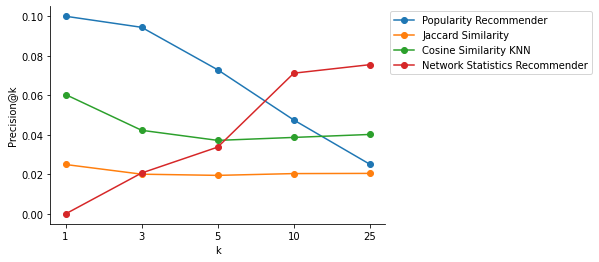
Precision@k for different k values on all models.
7
Conclusion
Our project showcases the potential of graph-based recommendations, which are a relatively new concept in comparison to decades-old tried-and-true
methods like K-nearest neighbors. However, the ability for graphs to handle complex relationships, as well as increased efficiency in data storage and
computation for graphs creates a huge advantage, and the increased metrics from our final model definitely demonstrate the effectiveness of interaction
graph-based recommendations for Reddit. Our project's emphasizes the importance of adopting newer and advanced techniques to keep up with the evolving
landscape of machine learning and data science. As technology advances, we believe that graph-based recommendations will continue to play a significant
role in shaping future recommendation systems.
8
Future Work/Next Steps
While our project has highlighted the benefits of graph-based recommendations over traditional methods, there are still
many potential applications of these techniques and algorithms that could still be explored. Applications that could be explored in the future
include graph-based and interaction-based recommendation on other social media networks, such as Twitter or Facebook, where potential communities
or topics can be recommended instead. In our project, we used a smaller subset of data from earlier years (before 2011) as otherwise graph sizes
would be too large. For expansions done to this project in particular, we could use a much more recent Reddit dataset from past 2020 in order to
overcome the bias of popular subreddits, as data from earlier days of the website represents a much smaller amount of communities compared to
today's amount. We hypothesize that our model will have greatly improved results when trained on more recent data. We could explore further
algorithms within TigerGraph and keep tuning the hyperparameters for the algorithms to ensure the optimal precision@k.
 1
1